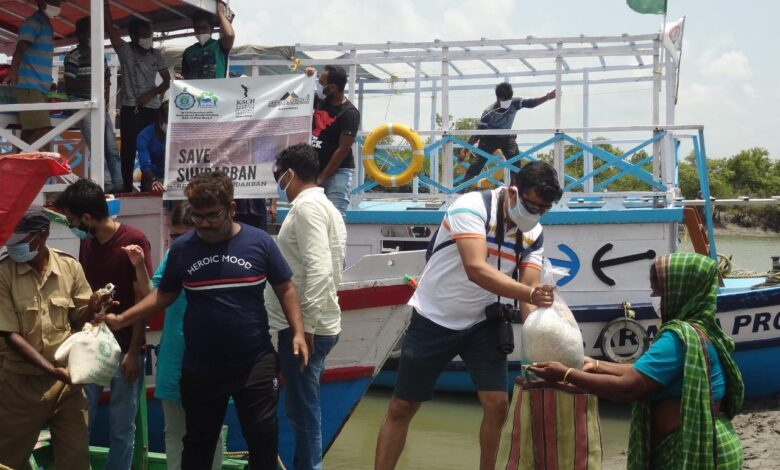
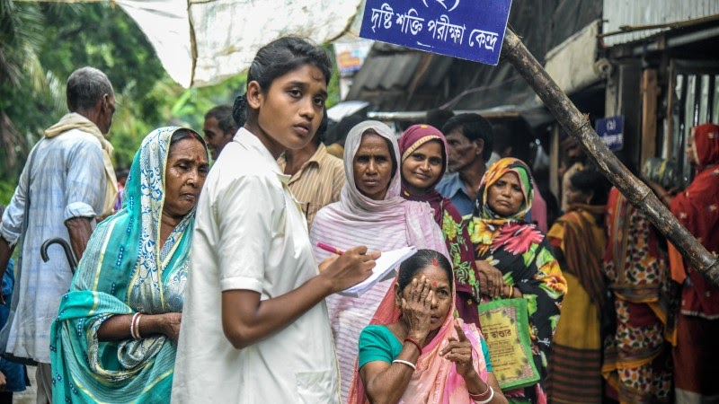

Steps taken by Government

The operation area of the Department of Sundarban Affairs is spread over 16 Police Stations and 19 Blocks of South & North 24-Parganas district.
In January 1994, a new Department viz. Department of Sundarban Affairs was created to give an impetus to the development efforts in the Sundarban region and Sundarban Development Board has been placed under the Department.
Department of Sundarban Affairs implements developmental activities through Sundarban Development Board. The department promotes social, economic and cultural advancement of people residing in the Sundarban areas of the districts of North & South 24 Parganas, co-ordinates development schemes and projects in the area, provides infrastructural facilities through improvement of rural communication, water resources, preservation of ecological balance, provides facilities for the development of the agriculture including minor irrigation and drainage system and allied matters.....
